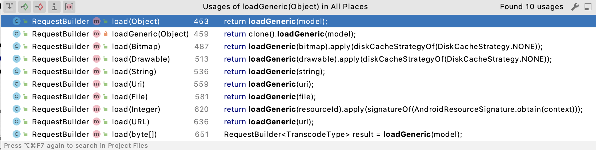

一、前言
在上一篇文章Glide源码解析（一） 中我们了解了Glide的基本加载流程，这一次我们针对Glide的缓存机制来分析一下，来看看Glide到底是如何进行图片缓存的。
二、缓存介绍
1.简介
关于Glide的缓存大致为分活动缓存(ActiveResources)、Lru内存缓存(LruResourceCache)和硬盘缓存，其中活动缓存和Lru内存缓存都是内存中的，随着应用的进程关闭会清除。而硬盘缓存顾名思义就是存储在硬盘中的，它是缓存的最后一步，防止应用从网络或其他地方重复下载。
2.Key
图片查找缓存是否存在主要是依靠Key，Glide的Key有好几个参数来决定，下面就是Glide的生成参数。
1 2 3 4 5 6 7 8 9 10 11 12 13 14 15 16 17 18 19 20 21 22 23 24 25 26 27 28 29 30 31 32 33 34 35 36 37 public <R> LoadStatus load( GlideContext glideContext, Object model, Key signature, int width, int height, Class<?> resourceClass, Class<R> transcodeClass, Priority priority, DiskCacheStrategy diskCacheStrategy, Map<Class<?>, Transformation<?>> transformations, boolean isTransformationRequired, boolean isScaleOnlyOrNoTransform, Options options, boolean isMemoryCacheable, boolean useUnlimitedSourceExecutorPool, boolean useAnimationPool, boolean onlyRetrieveFromCache, ResourceCallback cb, Executor callbackExecutor) { ... EngineKey key = keyFactory.buildKey( model, signature, width, height, transformations, resourceClass, transcodeClass, options); EngineResource<?> memoryResource; ... cb.onResourceReady( memoryResource, DataSource.MEMORY_CACHE, /* isLoadedFromAlternateCacheKey= */ false); return null; }
这里的model传入的是一个objetct对象，从model传入的地方一层层往上找，发现model赋值的地方在RequestBuilder的loadGeneric方法中。
1 2 3 4 5 6 7 8 9 @NonNull private RequestBuilder<TranscodeType> loadGeneric(@Nullable Object model) { if (isAutoCloneEnabled()) { return clone().loadGeneric(model); } this.model = model; isModelSet = true; return selfOrThrowIfLocked(); }
 可以看到传入的model参数其实就是load中传入的图片路径，假设我们使用的是网络加载图片的方式，那么这个model就是图片的url地址。除了model以外，我们看到还有signature签名、图片的宽高、options等参数，所以决定图片Key的参数有很多，如果同一张图片，即使是宽高有不一致，也会重新生成一个Key。
1 2 3 4 5 6 7 8 9 10 11 12 13 14 15 16 17 18 19 20 21 22 23 24 25 26 27 28 29 30 @Override public boolean equals(Object o) { if (o instanceof EngineKey) { EngineKey other = (EngineKey) o; return model.equals(other.model) && signature.equals(other.signature) && height == other.height && width == other.width && transformations.equals(other.transformations) && resourceClass.equals(other.resourceClass) && transcodeClass.equals(other.transcodeClass) && options.equals(other.options); } return false; } @Override public int hashCode() { if (hashCode == 0) { hashCode = model.hashCode(); hashCode = 31 * hashCode + signature.hashCode(); hashCode = 31 * hashCode + width; hashCode = 31 * hashCode + height; hashCode = 31 * hashCode + transformations.hashCode(); hashCode = 31 * hashCode + resourceClass.hashCode(); hashCode = 31 * hashCode + transcodeClass.hashCode(); hashCode = 31 * hashCode + options.hashCode(); } return hashCode; }
在EngineKey类中，重写了equals()和hashCode()方法，只有传入的参数完全一致时，才认为是同一个EngineKey对象。
3.ActiveResources
1）Engine#loadFromMemory
ActiveResources与LruResourceCache一样都存在于内存中，但却是不同的两个缓存，也有些文章会称之为一级缓存（LruResourceCache则被称为二级缓存）。我们暂且不管它的名称如何，我们先来看一下它是如何实现的。同样是在Engine类的load方法里，可以看到执行了loadFromMemory方法。看方法名我们知道这是加载缓存的地方。
1 2 3 4 5 6 7 8 9 10 11 12 13 14 15 16 17 18 19 20 21 22 23 24 25 26 27 28 29 EngineResource<?> memoryResource; synchronized (this) { memoryResource = loadFromMemory(key, isMemoryCacheable, startTime); @Nullable private EngineResource<?> loadFromMemory( EngineKey key, boolean isMemoryCacheable, long startTime) { if (!isMemoryCacheable) { return null; } EngineResource<?> active = loadFromActiveResources(key); if (active != null) { if (VERBOSE_IS_LOGGABLE) { logWithTimeAndKey("Loaded resource from active resources", startTime, key); } return active; } EngineResource<?> cached = loadFromCache(key); if (cached != null) { if (VERBOSE_IS_LOGGABLE) { logWithTimeAndKey("Loaded resource from cache", startTime, key); } return cached; } return null; }
loadFromMemory方法中首先判断了isMemoryCacheable参数，如果参数为false则返回空，意味着不从内存中加载缓存。这个参数是由Options的isMemoryCacheable()方法决定的，默认为true。接下来看loadFromActiveResources(key)方法，这个才是加载ActiveResources的地方。
2）ActiveResources#get
1 2 3 4 5 6 7 8 9 10 11 12 13 14 15 16 17 18 19 20 21 22 23 24 25 26 27 @Nullable private EngineResource<?> loadFromActiveResources(Key key) { EngineResource<?> active = activeResources.get(key); if (active != null) { active.acquire(); } return active; } @VisibleForTesting final Map<Key, ResourceWeakReference> activeEngineResources = new HashMap<>(); ActiveResources#get @Nullable synchronized EngineResource<?> get(Key key) { ResourceWeakReference activeRef = activeEngineResources.get(key); if (activeRef == null) { return null; } EngineResource<?> active = activeRef.get(); if (active == null) { cleanupActiveReference(activeRef); } return active; }
loadFromActiveResources方法调用了ActiveResources类中的activeEngineResources. get(key)方法，这里可以看到activeEngineResources是一个将Key作为键，ResourceWeak-Reference为值的HashMap集合。
1 2 3 4 5 6 7 8 9 10 11 12 13 14 15 16 17 18 19 20 21 22 23 24 25 26 27 28 29 30 31 32 33 34 35 36 @VisibleForTesting static final class ResourceWeakReference extends WeakReference<EngineResource<?>> { @SuppressWarnings("WeakerAccess") @Synthetic final Key key; @SuppressWarnings("WeakerAccess") @Synthetic final boolean isCacheable; @Nullable @SuppressWarnings("WeakerAccess") @Synthetic Resource<?> resource; @Synthetic @SuppressWarnings("WeakerAccess") ResourceWeakReference( @NonNull Key key, @NonNull EngineResource<?> referent, @NonNull ReferenceQueue<? super EngineResource<?>> queue, boolean isActiveResourceRetentionAllowed) { super(referent, queue); this.key = Preconditions.checkNotNull(key); this.resource = referent.isMemoryCacheable() && isActiveResourceRetentionAllowed ? Preconditions.checkNotNull(referent.getResource()) : null; isCacheable = referent.isMemoryCacheable(); } void reset() { resource = null; clear(); } }
ResourceWeakReference继承了WeakReference<EngineResource<?>>，可以看出活动缓存其实就是一个弱引用图片资源的集合。
1 2 3 4 5 6 7 8 9 10 11 12 13 14 15 16 17 18 19 20 21 22 23 24 25 26 private int acquired; synchronized void acquire() { if (isRecycled) { throw new IllegalStateException("Cannot acquire a recycled resource"); } ++acquired; } @SuppressWarnings("SynchronizeOnNonFinalField") void release() { boolean release = false; synchronized (this) { if (acquired <= 0) { throw new IllegalStateException("Cannot release a recycled or not yet acquired resource"); } if (--acquired == 0) { release = true; } } if (release) { //清除活动缓存并加入到Lru内存缓存中去 listener.onResourceReleased(key, this); } }
这里主要注意的一点是，loadFromActiveResources方法中，如果通过Key查找到了资源，则会调用active.acquire()方法，他会对acquired参数进行递增，相当于引用计数，因为对于活动缓存和Lru内存缓存来说，他们都存在于内存中，而Lru内存缓存根据Lru算法来计算（后面我们会提到），但是Lru内存缓存的大小是有上限的，当达到了上限需要将资源释放的时，如果此时资源正在被使用，那么释放的话会造成异常。所以Glide设计的时候将正在使用的缓存全部剪切到了ActiveResources中去。acquired进行累加，当所在的Activity被销毁时，会被into方法中创建的无界Fragment监听到生命周期变化（上一篇文章中讲过），触发release方法并对acquired进行递减，当acquired值为0时，会将图片资源重新剪切回Lru内存缓存中（对于这两处缓存来说，图片资源只会存在于活动缓存和Lru内存缓存中的其中一处地方）。
4.LruResourceCache
1）LRU
Lru内存缓存用的算法是LRU（Least Recently Used），意思就是最近最少使用。Lru算法是一种常用的页面置换算法，内部实现其实是一个支持访问排序的LinkedHashMap（访问排序就是当调用get()方法查询一个元素后，LinkedHashMap会把该元素移到链表的尾部），在Glide中的磁盘缓存DiskLruCache用的也是这个算法。
2）Engine#getEngineResourceFromCache
1 2 3 4 5 6 7 8 9 10 11 12 13 14 15 16 17 18 19 20 21 22 23 24 25 26 27 28 private EngineResource<?> loadFromCache(Key key) { EngineResource<?> cached = getEngineResourceFromCache(key); if (cached != null) { cached.acquire(); //加入到activity缓存 activeResources.activate(key, cached); } return cached; } private final MemoryCache cache; private EngineResource<?> getEngineResourceFromCache(Key key) { //不为空则移除 Resource<?> cached = cache.remove(key); final EngineResource<?> result; if (cached == null) { result = null; } else if (cached instanceof EngineResource) { result = (EngineResource<?>) cached; } else { result = new EngineResource<>( cached, /*isMemoryCacheable=*/ true, /*isRecyclable=*/ true, key, /*listener=*/ this); } return result; }
可以看到loadFromCache方法会先在Lru内存缓存中读取图片资源，如果这个资源不为空则会从中移除，然后将返回的cache资源加入到Activity缓存中。MemoryCache可以看到，他的实现就是Lru算法。
1 2 3 4 5 6 7 8 9 10 11 12 13 14 15 16 17 18 19 20 21 22 23 24 25 26 27 28 29 30 31 32 public class LruResourceCache extends LruCache<Key, Resource<?>> implements MemoryCache { private ResourceRemovedListener listener; public LruResourceCache(long size) { super(size); } @Override public void setResourceRemovedListener(@NonNull ResourceRemovedListener listener) { this.listener = listener; } ... @Override protected int getSize(@Nullable Resource<?> item) { if (item == null) { return super.getSize(null); } else { return item.getSize(); } } @SuppressLint("InlinedApi") @Override public void trimMemory(int level) { if (level >= android.content.ComponentCallbacks2.TRIM_MEMORY_BACKGROUND) { clearMemory(); } else if (level >= android.content.ComponentCallbacks2.TRIM_MEMORY_UI_HIDDEN || level == android.content.ComponentCallbacks2.TRIM_MEMORY_RUNNING_CRITICAL) { trimToSize(getMaxSize() / 2); } } }
5.磁盘缓存
1）磁盘缓存策略
下面的代码是在设置图片的时候不添加磁盘缓存。
1 2 3 4 Glide.with(Context) .load(url) .diskCacheStrategy(DiskCacheStrategy.NONE); .into(mImageView);
Glide同时还有其他几种磁盘缓存策略。
DiskCacheStrategy.NONE： 表示不使用磁盘缓存
DiskCacheStrategy.DATA： 表示磁盘缓存只缓存原始加载的图片
DiskCacheStrategy.RESOURCE： 表示磁盘缓存只缓存经过解码转换后的图片
DiskCacheStrategy.ALL： 表示磁盘缓存既缓存原始图片，也缓存经过解码转换后的图片
DiskCacheStrategy.AUTOMATIC： 表示让Glide根据图片资源智能地选择使用哪一种磁盘缓存策略，该选项也是我们在不进行手动设置的时候Glide的默认设置
2）磁盘缓存实现
1 2 3 4 5 6 7 8 9 10 11 12 13 14 15 16 17 18 19 20 21 22 23 24 25 26 27 28 29 30 31 32 33 34 35 36 37 38 39 40 41 42 43 44 45 46 47 48 49 50 51 52 53 54 55 private <R> LoadStatus waitForExistingOrStartNewJob( GlideContext glideContext, Object model, Key signature, int width, int height, ... Executor callbackExecutor, EngineKey key, long startTime) { EngineJob<?> current = jobs.get(key, onlyRetrieveFromCache); if (current != null) { current.addCallback(cb, callbackExecutor); if (VERBOSE_IS_LOGGABLE) { logWithTimeAndKey("Added to existing load", startTime, key); } return new LoadStatus(cb, current); } EngineJob<R> engineJob = engineJobFactory.build( key, isMemoryCacheable, useUnlimitedSourceExecutorPool, useAnimationPool, onlyRetrieveFromCache); DecodeJob<R> decodeJob = decodeJobFactory.build( glideContext, model, key, signature, width, height, resourceClass, transcodeClass, priority, diskCacheStrategy, transformations, isTransformationRequired, isScaleOnlyOrNoTransform, onlyRetrieveFromCache, options, engineJob); jobs.put(key, engineJob); engineJob.addCallback(cb, callbackExecutor); //核心方法 engineJob.start(decodeJob); return new LoadStatus(cb, engineJob); }
在上一篇文章中我们也提到过，当loadFromMemory方法返回为空时，就会调用waitForExistingOrStartNewJob方法，在方法中会将要加载的图片加入到DecodeJob中去，DecodeJob负责图片资源加载、解码、转换。最终通过engineJob.start(decodeJob)执行DecodeJob中的run方法，并调用runWrapped()。
1 2 3 4 5 6 public synchronized void start(DecodeJob<R> decodeJob) { this.decodeJob = decodeJob; GlideExecutor executor = decodeJob.willDecodeFromCache() ? diskCacheExecutor : getActiveSourceExecutor(); executor.execute(decodeJob); }
在EngineJob的start方法中，会通过willDecodeFromCache来判断当前是否需要磁盘缓存，如果此作业尝试从磁盘缓存解码资源，则返回 true，如果它始终从源解码，则返回 false，两种不同的解码方式会调用不同的线程池。
1 2 3 4 5 6 7 8 9 10 11 12 13 14 15 16 17 18 19 20 21 22 23 24 25 26 27 28 29 30 31 32 33 34 35 36 37 38 39 40 41 42 43 44 45 46 47 48 49 50 51 52 private void runWrapped() { switch (runReason) { case INITIALIZE: stage = getNextStage(Stage.INITIALIZE); currentGenerator = getNextGenerator(); runGenerators(); break; case SWITCH_TO_SOURCE_SERVICE: runGenerators(); break; case DECODE_DATA: decodeFromRetrievedData(); break; default: throw new IllegalStateException("Unrecognized run reason: " + runReason); } } private DataFetcherGenerator getNextGenerator() { switch (stage) { case RESOURCE_CACHE: return new ResourceCacheGenerator(decodeHelper, this); case DATA_CACHE: return new DataCacheGenerator(decodeHelper, this); case SOURCE: return new SourceGenerator(decodeHelper, this); case FINISHED: return null; default: throw new IllegalStateException("Unrecognized stage: " + stage); } } private void runGenerators() { currentThread = Thread.currentThread(); startFetchTime = LogTime.getLogTime(); boolean isStarted = false; while (!isCancelled && currentGenerator != null && !(isStarted = currentGenerator.startNext())) { stage = getNextStage(stage); currentGenerator = getNextGenerator(); if (stage == Stage.SOURCE) { reschedule(); return; } } if ((stage == Stage.FINISHED || isCancelled) && !isStarted) { notifyFailed(); } }
接下来getNextStage方法判断当前使用的缓存策略返回对应的枚举，然后getNextGenerator方法再根据不同的缓存策略返回不同的处理策略（读取原图、imageView的大小、从网络上读取等等），runGenerators方法则是执行读取操作。如果之前设置磁盘缓存策略为DiskCacheStrategy.RESOURCE，则应该对应的就是枚举Stage.RESOURCE_CACHE，那么接下来currentGenerator.startNext()调用的就是ResourceCacheGenerator的startNext方法。
1 2 3 4 5 6 7 8 9 10 11 12 13 14 15 16 17 18 19 20 21 22 23 24 25 26 27 28 29 30 31 32 33 34 35 36 37 38 39 40 41 42 43 44 45 46 47 48 49 50 51 52 53 54 55 56 57 58 59 60 61 62 63 64 65 66 67 68 @Override public boolean startNext() { GlideTrace.beginSection("ResourceCacheGenerator.startNext"); try { List<Key> sourceIds = helper.getCacheKeys(); if (sourceIds.isEmpty()) { return false; } List<Class<?>> resourceClasses = helper.getRegisteredResourceClasses(); if (resourceClasses.isEmpty()) { if (File.class.equals(helper.getTranscodeClass())) { return false; } throw new IllegalStateException( "Failed to find any load path from " + helper.getModelClass() + " to " + helper.getTranscodeClass()); } while (modelLoaders == null || !hasNextModelLoader()) { resourceClassIndex++; if (resourceClassIndex >= resourceClasses.size()) { sourceIdIndex++; if (sourceIdIndex >= sourceIds.size()) { return false; } resourceClassIndex = 0; } Key sourceId = sourceIds.get(sourceIdIndex); Class<?> resourceClass = resourceClasses.get(resourceClassIndex); Transformation<?> transformation = helper.getTransformation(resourceClass); currentKey = new ResourceCacheKey( // NOPMD AvoidInstantiatingObjectsInLoops helper.getArrayPool(), sourceId, helper.getSignature(), helper.getWidth(), helper.getHeight(), transformation, resourceClass, helper.getOptions()); cacheFile = helper.getDiskCache().get(currentKey); if (cacheFile != null) { sourceKey = sourceId; modelLoaders = helper.getModelLoaders(cacheFile); modelLoaderIndex = 0; } } loadData = null; boolean started = false; while (!started && hasNextModelLoader()) { ModelLoader<File, ?> modelLoader = modelLoaders.get(modelLoaderIndex++); loadData = modelLoader.buildLoadData( cacheFile, helper.getWidth(), helper.getHeight(), helper.getOptions()); if (loadData != null && helper.hasLoadPath(loadData.fetcher.getDataClass())) { started = true; loadData.fetcher.loadData(helper.getPriority(), this); } } return started; } finally { GlideTrace.endSection(); } }
这里的helper.getDiskCache().get(currentKey)这句话就是获取缓存，getDiskCache方法获取的就是包含DiskLruCacheFactory对象的LazyDiskCacheProvider对象，也就是获取了我们前面所说的DiskLruCache对象，它是由DiskCache.Factory.build()生成的。DiskCache.Factory是在GlideBuilder的build方法中生成的。
1 2 3 if (diskCacheFactory == null) { diskCacheFactory = new InternalCacheDiskCacheFactory(context); }
3）磁盘缓存写入
1 2 3 4 5 6 7 8 9 10 11 12 13 14 15 16 17 private void runWrapped() { switch (runReason) { case INITIALIZE: stage = getNextStage(Stage.INITIALIZE); currentGenerator = getNextGenerator(); runGenerators(); break; case SWITCH_TO_SOURCE_SERVICE: runGenerators(); break; case DECODE_DATA: decodeFromRetrievedData(); break; default: throw new IllegalStateException("Unrecognized run reason: " + runReason); } }
在上一篇文章中我们提到过，runGenerators()之后执行的是decodeFromRetrievedData方法。
1 2 3 4 5 6 7 8 9 10 11 12 13 14 15 16 17 18 19 20 21 22 23 24 25 26 27 28 29 30 31 32 33 34 35 36 37 38 39 40 41 42 43 44 45 46 47 48 49 50 51 52 private void decodeFromRetrievedData() { Resource<R> resource = null; try { resource = decodeFromData(currentFetcher, currentData, currentDataSource); } catch (GlideException e) { e.setLoggingDetails(currentAttemptingKey, currentDataSource); throwables.add(e); } if (resource != null) { notifyEncodeAndRelease(resource, currentDataSource, isLoadingFromAlternateCacheKey); } else { runGenerators(); } } private void notifyEncodeAndRelease( Resource<R> resource, DataSource dataSource, boolean isLoadedFromAlternateCacheKey) { GlideTrace.beginSection("DecodeJob.notifyEncodeAndRelease"); try { ... Resource<R> result = resource; LockedResource<R> lockedResource = null; ... //回调完成 notifyComplete(result, dataSource, isLoadedFromAlternateCacheKey); stage = Stage.ENCODE; try { //存入磁盘缓存 if (deferredEncodeManager.hasResourceToEncode()) { deferredEncodeManager.encode(diskCacheProvider, options); } } finally { ... } onEncodeComplete(); } finally { } } void encode(DiskCacheProvider diskCacheProvider, Options options) { GlideTrace.beginSection("DecodeJob.encode"); try { diskCacheProvider .getDiskCache() .put(key, new DataCacheWriter<>(encoder, toEncode, options)); } finally { toEncode.unlock(); GlideTrace.endSection(); } }
当resource资源不为空的时候会调用notifyEncodeAndRelease进行回调，并在该方法中调用了内部类DeferredEncodeManager的encode方法存入了磁盘缓存，这里存入的是转换后的磁盘缓存。同时调用notifyComplete(result, dataSource, isLoadedFromAlternateCacheKey)方法，最终实现callback的onResourceReady方法进行回调，最终会调用onEngineJobComplete方法。
1 2 3 4 5 6 7 8 9 @Override public synchronized void onEngineJobComplete( EngineJob<?> engineJob, Key key, EngineResource<?> resource) { // A null resource indicates that the load failed, usually due to an exception. if (resource != null && resource.isMemoryCacheable()) { activeResources.activate(key, resource); } jobs.removeIfCurrent(key, engineJob); }
通过onEngineJobComplete我们知道，Glide在没有内存缓存的情况下，会读取磁盘上或者网络上的缓存，读取完毕之后不会立即加载到ImageView，会先加入活动缓存再进行加载显示（图片显示可以看上一篇文章）。
三、总结
总的来说Glide再加载图片的时候会先判断内存中是否已经有图片缓存，它会从两个地方获取，先从正在显示的图片集合中查找，也就是活动缓存（ActiveResources），如果没有再从Lru内存缓存中查找。这两者的区别是，活动缓存使用的是一个弱引用的集合来存储，而Lru内存缓存使用的是LruCache算法来存储。如果内存中没有图片缓存，会判断图片资源是否在本地磁盘缓存，如果有的话直接从磁盘上面读取，如果没有的话会先从网络下载到磁盘上再进行读取，读取完图片资源后不会立即加载到ImageView上，会先加入活动缓存再进行加载显示。